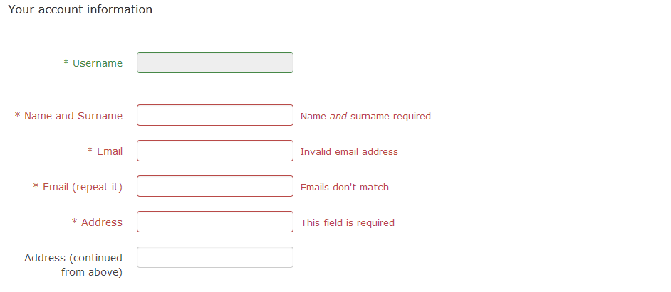

AdsManager is available as either a FREE version or as a pack (Bronze, Silver, Gold).
To download or test the free version you can click on the "Try Now" button to test a demo site or download AdsManager Free by clicking on the link "Download" on the menu.
If you want more functionality, you can buy different packs of AdsManager (Bronze, Silver or Gold) by clicking on the link "Purchase" on the menu.
Then scroll down the page and click on the "Purchase" button for the pack you need.
A comparative table describing each pack is available here: Adsmanager Features
Once you click on "Subscribe now", you will see this view :
You can use a coupon if you have it. If you don't have Paypal, see Frequently Asked Questions
Thanks for buying AdsManager !